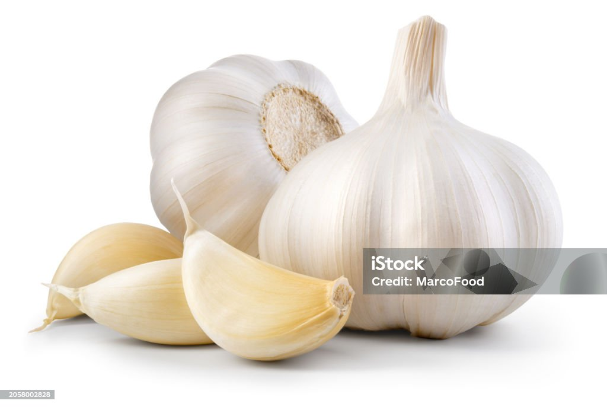

일백해리는 마늘의 별명이다. 한가지의 해가 있고 백가지의 이로움이 있다는 뜻이다. 그 한가지란, 아린맛으로 인해 위에 부담을 준다는 것이다.
마늘의 아린맛은 알리신 이라는 성분에 때문으로, 살균 및 항균 작용을 하며 마늘에 들어있는 아연이 피로 회복에 도움을 준다.
다양한 기기로 인터넷에 접속할 수 있는 요즘, HTML4 HTML5를 공부해야 할 때입니다
HTML5 표준 규약 살펴보기